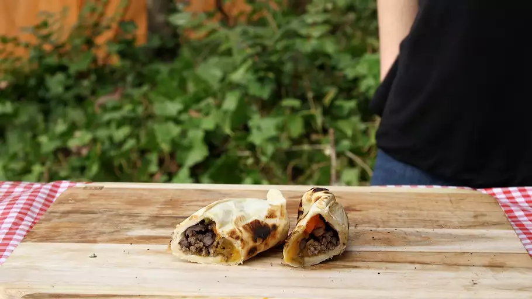

Flaming Burritos

Description:
Kids especially love these. They are delicious, fun to make, and
require zero clean-up - the perfect camping food! This recipe is
based on a tried-and-true Girl Scouts® tradition. Serve with salsa
and sour cream on the side.
Ingredients:
- 1 pound ground beef
- 1 (15 ounce) can black beans, drained and rinsed
- 1 large red bell pepper, chopped
- 4 (10 inch) flour tortillas
- 4 cups shredded mozzarella cheese, divided
Steps:
-
Heat a large nonstick skillet over medium heat. Add ground beef;
cook and stir until browned, 5 to 10 minutes. Stir in black beans
and red bell pepper; cook until heated through, about 5 minutes.
-
Cut four 13x13-inch pieces of aluminum foil.
-
Place 1 tortilla on each piece of aluminum foil. Spoon beef mixture
in a line down the center of each tortilla. Divide cheese evenly
among tortillas. Fold opposing edges of each tortilla to overlap
the filling. Roll up in the shape of a burrito, sealing ends.
-
Rinse and dry 4 half-gallon wax-lined milk cartons. Cut several
1-inch diamond-shaped vents into 2 corners of each milk carton,
near the bottom. Place a wrapped burrito inside each carton.
-
Place milk cartons in a safe cooking area outdoors. Light each on
fire at one of the vents; cook until cartons burn down, about 2 minutes.
Gently unwrap burritos with heatproof gloves.